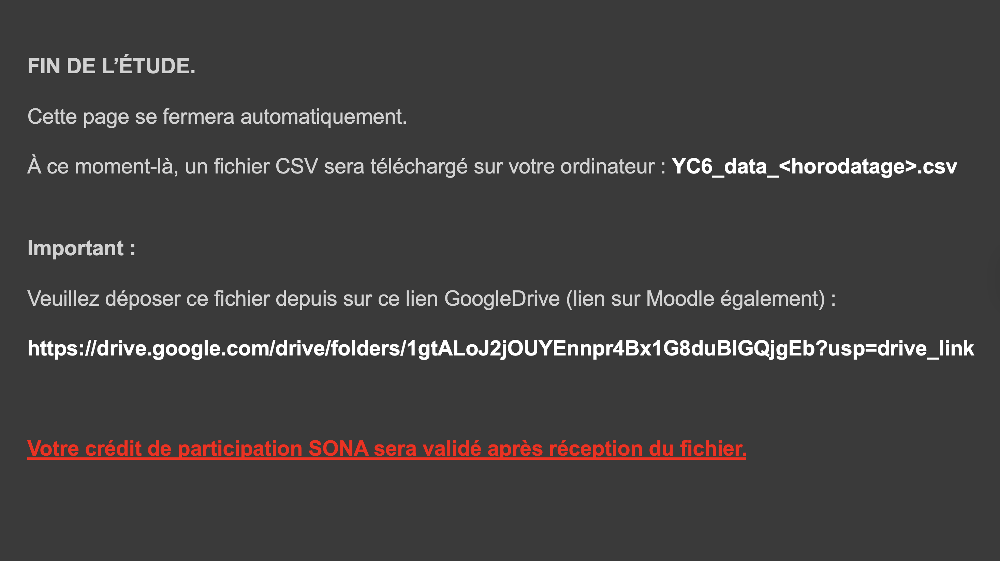

<!DOCTYPE html>
<html lang="fr">
<head>
  <meta charset="UTF-8">
  <title>YC5 – Expérience</title>

  <!-- jsPsych 7 — URLs officielles -->
  <script src="https://unpkg.com/jspsych@7.3.4"></script>
  <script src="https://unpkg.com/@jspsych/plugin-html-keyboard-response@1.1.3"></script>
  <script src="https://unpkg.com/@jspsych/plugin-canvas-keyboard-response@1.1.3"></script>
  <script src="https://unpkg.com/@jspsych/plugin-survey-html-form@1.0.3"></script>
  <script src="https://unpkg.com/@jspsych/plugin-preload@1.1.3"></script>
  <link href="https://unpkg.com/jspsych@7.3.4/css/jspsych.css" rel="stylesheet">

  <style>
    /* ---- Fond sombre ---- */
    body { background: #3c3c3c; margin: 0; padding: 0; }
    .jspsych-display-element { background: #3c3c3c; }
    .jspsych-content-wrapper { background: #3c3c3c; }

    /* ---- Croix de fixation ---- */
    .fixation { font-size: 80px; color: #ffffff; }

    /* ---- Modules Émotion / Situation (sliders HTML) ---- */
    .module-container { color:#fff; max-width:700px; margin:0 auto; padding:10px; }
    .module-header { font-size:18px; font-weight:bold; margin-bottom:20px; line-height:1.5; }
    .emo-row, .sit-row { display:flex; align-items:center; margin-bottom:18px; gap:20px; }
    .emo-label { font-size:16px; font-weight:bold; width:120px; flex-shrink:0; }
    .emo-slider-wrap, .sit-slider-wrap { flex:1; }
    .sit-question { font-size:15px; margin-bottom:8px; }

    /* ---- Module Situation (corrigé : sliders même largeur) ---- */
    .sit-row {
      width: 100%;
      flex-direction: column;
      align-items: stretch;
    }
    .sit-question { width: 100%; }
    .sit-slider-wrap { width: 100%; }

    .emo-slider-wrap input[type="range"], .sit-slider-wrap input[type="range"] { width:100%; accent-color:#aaa; }
    .slider-tick-labels { display:flex; justify-content:space-between; font-size:12px; color:#aaa; margin-top:3px; }
    .error-msg { color:#ff6666; font-size:14px; margin-top:10px; }
    .jspsych-btn { background:#555; color:#fff; border:1px solid #aaa; padding:10px 30px;
                   font-size:16px; cursor:pointer; margin-top:20px; border-radius:4px; }
    .jspsych-btn:hover { background:#777; }

    /* ---- Module DAT ---- */
    #dat-container { color: #ffffff; text-align: center; max-width: 1000px; margin: 0 auto; }
    #dat-container .dat-header { font-size: 18px; font-weight: bold; margin-bottom: 8px; }
    #dat-container .dat-subheader { font-size: 15px; margin-bottom: 24px; color: #cccccc; }
    .dat-grid { display: grid; grid-template-columns: 1fr 1fr; gap: 30px 60px;
                justify-items: center; margin-bottom: 20px; }
    .dat-cell { display: flex; flex-direction: column; align-items: center; width: 300px; }
    .dat-cell img { max-width: 280px; max-height: 200px; object-fit: contain;
                    border: 2px solid #888; background: #222; }
    .dat-cell .dat-slider-wrap { width: 260px; margin-top: 12px; }
    .dat-cell input[type="range"] { width: 100%; accent-color: #aaa; }
    .dat-tick-labels { display: flex; justify-content: space-between;
                       font-size: 12px; color: #aaa; margin-top: 2px; }
    #dat-error { color: #ff6666; font-size: 15px; margin-top: 10px; display: none; }

    /* ---- Canvas plein écran ---- */
    canvas { display: block; margin: 0 auto; }
  </style>
</head>

<body>
<script>
"use strict";

/* ==========================================================================
   SECTION 1 — CONFIGURATION
   ========================================================================== */

const CFG = {
  IMG_BASE    : 'images/',
  ZOOM_FACTOR : 1.5,
  FIX_MS      : 2000,
  IMG_MS      : 8000,
  BG_COLOR    : '#3c3c3c',
};

/* ---------- Dessins DAT ---------- */
const DAT_DRAWINGS = {
  approach      : [ 'dat_images/dat1/ApR1.png', 'dat_images/dat1/ApR2.png' ],
  confrontation : [ 'dat_images/dat2/ApT1.png', 'dat_images/dat2/ApT2.png' ],
  withdraw      : [ 'dat_images/dat3/AvR1.png', 'dat_images/dat3/AvR2.png' ],
  freeze        : [ 'dat_images/dat4/AvT1.png', 'dat_images/dat4/AvT2.png' ],
};

/* ==========================================================================
   SECTION 2 — LISTE D'IMAGES
   ========================================================================== */

/* IMPORTANT :
   Garde EXACTEMENT ton IMAGE_LIST actuel ici (inchangé).
   (Je ne le recolle pas ici car il est très long.) */
const IMAGE_LIST = [
  /* ... COLLE ICI TA LISTE COMPLETE IMAGE_LIST ... */
];

/* ==========================================================================
   SECTION 3 — UTILITAIRES
   ========================================================================== */

function getCachedImage(src) {
  const img = new Image();
  img.src = src;
  return img;
}

function drawImageCentered(canvas, imgSrc) {
  const ctx = canvas.getContext('2d');
  ctx.fillStyle = CFG.BG_COLOR;
  ctx.fillRect(0, 0, canvas.width, canvas.height);
  const img = getCachedImage(imgSrc);
  const go = () => {
    const scale = Math.min(canvas.width / img.naturalWidth, canvas.height / img.naturalHeight);
    const dw = img.naturalWidth  * scale;
    const dh = img.naturalHeight * scale;
    const dx = (canvas.width  - dw) / 2;
    const dy = (canvas.height - dh) / 2;
    ctx.drawImage(img, dx, dy, dw, dh);
  };
  if (img.complete && img.naturalWidth) { go(); }
  else { img.onload = go; }
}

function drawImageZoomed(canvas, imgSrc, zoomX, zoomY) {
  const ctx  = canvas.getContext('2d');
  const zf   = CFG.ZOOM_FACTOR;
  ctx.fillStyle = CFG.BG_COLOR;
  ctx.fillRect(0, 0, canvas.width, canvas.height);
  const img = getCachedImage(imgSrc);
  const go = () => {
    const IW = img.naturalWidth, IH = img.naturalHeight;
    const srcW = IW / zf, srcH = IH / zf;
    let srcX = zoomX - srcW / 2;
    let srcY = zoomY - srcH / 2;
    srcX = Math.max(0, Math.min(srcX, IW - srcW));
    srcY = Math.max(0, Math.min(srcY, IH - srcH));
    ctx.drawImage(img, srcX, srcY, srcW, srcH, 0, 0, canvas.width, canvas.height);
  };
  if (img.complete && img.naturalWidth) { go(); }
  else { img.onload = go; }
}

function shuffle(arr) {
  const a = [...arr];
  for (let i = a.length - 1; i > 0; i--) {
    const j = Math.floor(Math.random() * (i + 1));
    [a[i], a[j]] = [a[j], a[i]];
  }
  return a;
}

function randomPick(arr) {
  return arr[Math.floor(Math.random() * arr.length)];
}

/* ==========================================================================
   SECTION 4 — CONSTRUCTEURS DE TRIALS
   ========================================================================== */

const EMOTION_DEFS = [
  { name: 'joie',      label: 'JOIE' },
  { name: 'colere',    label: 'COLÈRE' },
  { name: 'espoir',    label: 'ESPOIR' },
  { name: 'tristesse', label: 'TRISTESSE' },
  { name: 'peur',      label: 'PEUR' },
  { name: 'autre',     label: 'AUTRE' },
];

const SIT_DEFS = [
  {
    name  : 'sit_controle',
    text  : 'Dans quelle mesure pourriez-vous influencer ce qui s\'y passe ?',
    left  : 'Je n\'aurais aucun contrôle sur la situation',
    right : 'J\'aurais beaucoup de contrôle sur la situation',
  },
  {
    name  : 'sit_aide',
    text  : 'Vous seriez-vous senti(e) aidé(e) ou bloqué(e) dans l\'accomplissement de ce qui est important pour vous ?',
    left  : 'Très bloqué(e)',
    right : 'Très aidé(e)',
  },
  {
    name  : 'sit_consequences',
    text  : 'Dans quelle mesure ce qui s\'y passe aurait-il des conséquences positives ou négatives pour ce qui est important pour vous ?',
    left  : 'Conséquences très négatives',
    right : 'Conséquences très positives',
  },
];

function makeFixation() {
  return {
    type    : jsPsychHtmlKeyboardResponse,
    stimulus: '<div class="fixation">+</div>',
    choices : 'NO_KEYS',
    trial_duration: CFG.FIX_MS,
    data    : { phase: 'fixation' },
  };
}

function makeImageTrial(imgData, trialNum) {
  const src = CFG.IMG_BASE + imgData.folder + '/' + imgData.filename;
  return {
    type        : jsPsychCanvasKeyboardResponse,
    canvas_size : [window.screen.height, window.screen.width],
    stimulus    : (canvas) => drawImageCentered(canvas, src),
    choices     : 'NO_KEYS',
    trial_duration: CFG.IMG_MS,
    data        : {
      phase      : 'image_normal',
      trial_num  : trialNum,
      image_id   : imgData.image_id,
      emotion_type: imgData.emotion,
    },
  };
}

function makeZoomTrial(imgData, trialNum) {
  const src = CFG.IMG_BASE + imgData.folder + '/' + imgData.filename;
  return {
    type        : jsPsychCanvasKeyboardResponse,
    canvas_size : [window.screen.height, window.screen.width],
    stimulus    : (canvas) => drawImageZoomed(canvas, src, imgData.zoomX, imgData.zoomY),
    choices     : 'NO_KEYS',
    trial_duration: CFG.IMG_MS,
    data        : {
      phase      : 'image_zoom',
      trial_num  : trialNum,
      image_id   : imgData.image_id,
      emotion_type: imgData.emotion,
      zoomX      : imgData.zoomX,
      zoomY      : imgData.zoomY,
    },
  };
}

/* ---- Module Émotion (6 sliders, AUTRE toujours dernier) ---- */
function makeEmotionTrial(imgData, trialNum, phaseLabel) {
  function buildHtml() {
    const coreShuf = shuffle([0,1,2,3,4]);
    const order = [...coreShuf, 5];
    window._emoOrder = order;

    const rows = order.map(i => {
      const def = EMOTION_DEFS[i];
      return '<div class="emo-row"><div class="emo-label">' + def.label + '</div>' +
        '<div class="emo-slider-wrap"><input type="range" name="' + def.name + '" class="emo-slider" min="0" max="100" step="1" value="0">' +
        '<div class="slider-tick-labels"><span>Pas du tout</span><span>Extrêmement</span></div></div></div>';
    }).join('');

    return '<div class="module-container"><p class="module-header">Pendant que vous regardiez l\'image, dans quelle mesure avez-vous ressenti chacune des émotions suivantes ?</p>' + rows +
      '<div id="emo-error" class="error-msg" style="display:none">Merci de déplacer tous les curseurs avant de continuer.</div></div>';
  }

  return {
    type: jsPsychSurveyHtmlForm,
    html: buildHtml,
    button_label: 'Continuer',
    on_load: function() {
      const moved = new Set();
      document.querySelectorAll('.emo-slider').forEach(function(s) {
        s.addEventListener('input', function() { moved.add(s.name); });
      });
      const btn = document.getElementById('jspsych-survey-html-form-next');
      if (btn) btn.addEventListener('click', function(e) {
        if (moved.size < 6) {
          e.preventDefault();
          e.stopImmediatePropagation();
          document.getElementById('emo-error').style.display='block';
        }
      }, true);
    },
    on_finish: function(data) {
      data.phase = 'emotion_' + (phaseLabel || 'pre_zoom');
      data.trial_num = trialNum;
      data.image_id = imgData.image_id;
      data.emotion_type = imgData.emotion;
      data.emotion_order = (window._emoOrder||[]).map(function(i){ return EMOTION_DEFS[i].name; }).join(',');
    },
  };
}

/* ---- Module DAT (4 dessins + 4 sliders 1-5, grille 2x2) ---- */
function makeDatTrial(imgData, phase, trialNum) {
  function buildDatHtml() {
    const catKeys  = shuffle(['approach','confrontation','freeze','withdraw']);
    const drawings = catKeys.map(k => randomPick(DAT_DRAWINGS[k]));
    window._datState = { catKeys, drawings };

    /* Toujours la même consigne */
    const header =
      'Pendant que vous regardiez la dernière image, dans quelle mesure aviez-vous envie d\'agir comme la personne représentée sur chacun de ces dessins ?';

    const cells = drawings.map((src, i) => `
      <div class="dat-cell">
        
        <div class="dat-slider-wrap">
          <input type="range" name="dat_${catKeys[i]}"
                 class="dat-slider required-slider"
                 data-drawing="${src}"
                 min="1" max="5" step="0.1" value="1">
          <div class="dat-tick-labels">
            <span>1<br><small>Pas du tout</small></span>
            <span>3</span>
            <span>5<br><small>Extrêmement</small></span>
          </div>
        </div>
      </div>`).join('');

    return `
      <div id="dat-container">
        <p class="dat-header">${header}</p>
        <p class="dat-subheader">De 1 (pas du tout) à 5 (extrêmement)</p>
        <div class="dat-grid">${cells}</div>
        <div id="dat-error">Merci de déplacer tous les curseurs avant de continuer.</div>
      </div>`;
  }

  return {
    type        : jsPsychSurveyHtmlForm,
    html        : buildDatHtml,
    button_label: 'Continuer',
    on_load     : function() {
      const moved = new Set();
      document.querySelectorAll('.required-slider').forEach(s => {
        s.addEventListener('input', () => moved.add(s.name));
      });
      const btn = document.getElementById('jspsych-survey-html-form-next');
      if (btn) {
        btn.addEventListener('click', function(e) {
          if (moved.size < 4) {
            e.preventDefault();
            e.stopImmediatePropagation();
            document.getElementById('dat-error').style.display = 'block';
          }
        }, true);
      }
    },
    on_finish   : function(data) {
      data.phase        = 'dat_' + phase;
      data.trial_num    = trialNum;
      data.image_id     = imgData.image_id;
      data.emotion_type = imgData.emotion;
      if (window._datState) {
        data.dat_order    = window._datState.catKeys.join(',');
        data.dat_drawings = window._datState.drawings.join(',');
      }
    },
  };
}

/* ---- Module Situation (3 sliders HTML, ordre aleatoire) ---- */
function makeSituationTrial(imgData, phase, trialNum) {
  function buildHtml() {
    const order = shuffle([0,1,2]);
    window._sitOrder = order;
    const rows = order.map(i => {
      const def = SIT_DEFS[i];
      return '<div class="sit-row"><p class="sit-question">' + def.text + '</p>' +
        '<div class="sit-slider-wrap"><input type="range" name="' + def.name + '" class="sit-slider" min="0" max="100" step="1" value="0">' +
        '<div class="slider-tick-labels"><span>' + def.left + '</span><span>' + def.right + '</span></div></div></div>';
    }).join('');
    return '<div class="module-container"><p class="module-header">En vous projetant dans la situation représentée par l\'image…</p>' + rows +
      '<div id="sit-error" class="error-msg" style="display:none">Merci de déplacer tous les curseurs avant de continuer.</div></div>';
  }

  return {
    type: jsPsychSurveyHtmlForm,
    html: buildHtml,
    button_label: 'Continuer',
    on_load: function() {
      const moved = new Set();
      document.querySelectorAll('.sit-slider').forEach(function(s) {
        s.addEventListener('input', function() { moved.add(s.name); });
      });
      const btn = document.getElementById('jspsych-survey-html-form-next');
      if (btn) btn.addEventListener('click', function(e) {
        if (moved.size < 3) {
          e.preventDefault();
          e.stopImmediatePropagation();
          document.getElementById('sit-error').style.display='block';
        }
      }, true);
    },
    on_finish: function(data) {
      data.phase = 'situation_' + phase;
      data.trial_num = trialNum;
      data.image_id = imgData.image_id;
      data.emotion_type = imgData.emotion;
      data.sit_order = (window._sitOrder||[]).map(function(i){ return SIT_DEFS[i].name; }).join(',');
    },
  };
}

/* ==========================================================================
   SECTION 5 — TIMELINE
   ========================================================================== */

const jsPsych = initJsPsych({
  on_finish: function() { saveData(); },
});

/* ---- Sélection 40 images uniques : 20 hope + 20 sadness ---- */
function sampleWithoutReplacement(arr, n) {
  if (n > arr.length) {
    throw new Error(`Impossible de tirer ${n} éléments : seulement ${arr.length} disponibles.`);
  }
  return shuffle(arr).slice(0, n);
}

const hopePool = IMAGE_LIST.filter(d => d.emotion === 'hope');
const sadnessPool = IMAGE_LIST.filter(d => d.emotion === 'sadness');

const pickedHope = sampleWithoutReplacement(hopePool, 20);
const pickedSadness = sampleWithoutReplacement(sadnessPool, 20);

const shuffledImages = shuffle([...pickedHope, ...pickedSadness]); // 40 images uniques

/* Toutes les images à précharger (uniquement ces 40) */
const allImagePaths = shuffledImages.map(
  d => CFG.IMG_BASE + d.folder + '/' + d.filename
);

/* Liste des dessins DAT à précharger */
const allDatPaths = Object.values(DAT_DRAWINGS).flat();

/* Slides à précharger */
const SLIDE_PATHS = [
  'slides/slide1.png',
  'slides/slide2.png',
  'slides/slide3.png',
  'slides/slide4.png',
  'slides/slide5.png',
  'slides/slide6.png',
  'slides/slide7.png',
];

/* ----- Préchargement ----- */
const preload = {
  type  : jsPsychPreload,
  images: [...allImagePaths, ...allDatPaths, ...SLIDE_PATHS],
  show_progress_bar: true,
  message: '<p style="color:#fff">Chargement des images…</p>',
};

/* ----- Question sexe ----- */
const sexeQuestion = {
  type: jsPsychSurveyHtmlForm,
  html: `
    <div style="color:#fff; max-width:600px; margin:0 auto; font-size:18px; line-height:1.6; padding:20px;">
      <p><strong>Quel est votre sexe ?</strong></p>
      <label><input type="radio" name="sexe" value="Femme" required> Femme</label><br><br>
      <label><input type="radio" name="sexe" value="Homme"> Homme</label><br><br>
      <label><input type="radio" name="sexe" value="Autre"> Autre</label><br><br>
      <label><input type="radio" name="sexe" value="Ne souhaite pas répondre"> Ne souhaite pas répondre</label>
    </div>
  `,
  button_label: "Continuer",
  on_finish: function(data){
    data.phase = "demographics";
  }
};

/* ----- Slides d'introduction (1 à 6) ----- */
const introSlides = {
  timeline: [
    { type: jsPsychHtmlKeyboardResponse,
      stimulus: '',
      choices: ['Enter'] },
    { type: jsPsychHtmlKeyboardResponse,
      stimulus: '',
      choices: ['Enter'] },
    { type: jsPsychHtmlKeyboardResponse,
      stimulus: '',
      choices: ['Enter'] },
    { type: jsPsychHtmlKeyboardResponse,
      stimulus: '',
      choices: ['Enter'] },
    { type: jsPsychHtmlKeyboardResponse,
      stimulus: '',
      choices: ['Enter'] },
    { type: jsPsychHtmlKeyboardResponse,
      stimulus: '',
      choices: ['Enter'] },
  ],
};

/* ----- Slide progression (5 secondes) ----- */
function makeProgressSlide(count) {
  return {
    type: jsPsychHtmlKeyboardResponse,
    stimulus: `
      <div style="color:#fff; text-align:center; font-size:28px; line-height:1.6; padding:20px;">
        <p><strong>Bravo !</strong></p>
        <p>Vous avez accompli ${count}/80 images</p>
      </div>
    `,
    choices: 'NO_KEYS',
    trial_duration: 5000,
  };
}

/* ----- Boucle trials : 40 images uniques => 80 présentations (normal+zoom) ----- */
const trialTimeline = [];

shuffledImages.forEach((imgData, idx) => {
  const trialNum = idx + 1;

  trialTimeline.push(
    makeFixation(),
    makeImageTrial(imgData, trialNum),
    makeEmotionTrial(imgData, trialNum, 'pre_zoom'),
    makeDatTrial(imgData, 'pre_zoom', trialNum),
    makeSituationTrial(imgData, 'pre_zoom', trialNum),

    makeFixation(),
    makeZoomTrial(imgData, trialNum),
    makeEmotionTrial(imgData, trialNum, 'post_zoom'),
    makeDatTrial(imgData, 'post_zoom', trialNum),
    makeSituationTrial(imgData, 'post_zoom', trialNum),
  );

  /* Toutes les 10 images uniques (=> 20 présentations) : 20/80, 40/80, 60/80
     (pas de slide 80/80 car tu as déjà la slide finale) */
  if (trialNum % 10 === 0 && trialNum < 40) {
    trialTimeline.push(makeProgressSlide(trialNum * 2));
  }
});

/* ----- Slide de fin (7) : 5 secondes ----- */
const goodbye = {
  type: jsPsychHtmlKeyboardResponse,
  stimulus: '',
  choices: 'NO_KEYS',
  trial_duration: 5000,
};

/* ----- Timeline finale ----- */
jsPsych.run([
  preload,
  sexeQuestion,
  introSlides,
  ...trialTimeline,
  goodbye,
]);

/* ==========================================================================
   SECTION 6 — SAUVEGARDE DES DONNÉES (CSV)
   ========================================================================== */
function saveData() {
  const allData = jsPsych.data.get().filter(
    d => d.phase && d.phase !== 'fixation'
  );

  const rows = allData.values();
  if (!rows.length) return;

  const cols = new Set();
  rows.forEach(r => Object.keys(r).forEach(k => cols.add(k)));
  const headers = [...cols];

  const csv = [
    headers.join(','),
    ...rows.map(r =>
      headers.map(h => {
        const v = r[h] !== undefined ? r[h] : '';
        const s = typeof v === 'object' ? JSON.stringify(v) : String(v);
        return '"' + s.replace(/"/g, '""') + '"';
      }).join(',')
    ),
  ].join('\n');

  const blob = new Blob([csv], { type: 'text/csv;charset=utf-8;' });
  const a    = document.createElement('a');
  a.href     = URL.createObjectURL(blob);
  a.download = 'YC5_data_' + new Date().toISOString().replace(/[:.]/g,'-') + '.csv';
  a.click();
}
</script>
</body>
</html>

